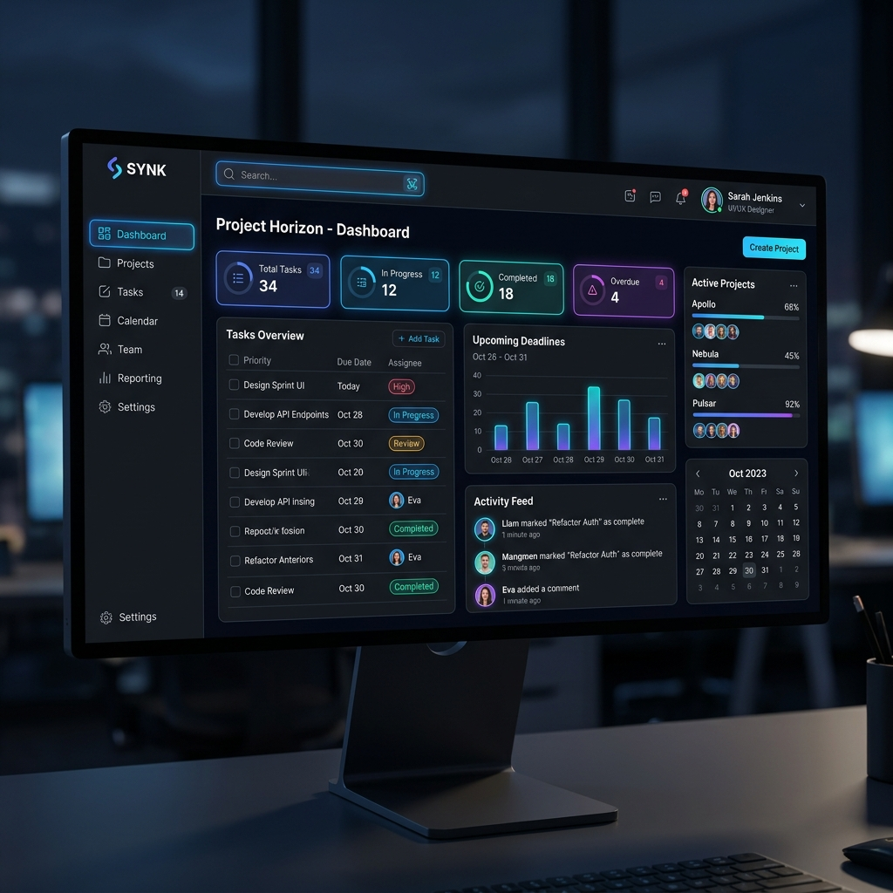

ត្រឡប់ក្រោយ
Task Management App

អំពីគម្រោង (Overview)
កម្មវិធីគ្រប់គ្រងការងារនេះជួយសម្រួលដល់ការធ្វើការងារជាក្រុម ដោយអនុញ្ញាតឱ្យអ្នកប្រើប្រាស់អាចបង្កើត ចាត់ចែង និងតាមដានដំណើរការនៃការងារ (Tasks) នីមួយៗក្នុងទម្រង់ជា Kanban Board បានយ៉ាងមានប្រសិទ្ធភាព។
មុខងារសំខាន់ៗ (Key Features)
- អូសទម្លាក់ (Drag and Drop) ការងារតាមដំណាក់កាល
- ចាត់ចែងភារកិច្ចឱ្យសមាជិកក្រុម
- កំណត់ថ្ងៃផុតកំណត់ និងដាក់ពណ៌សម្គាល់អាទិភាព
- ធ្វើបច្ចុប្បន្នភាពទិន្នន័យភ្លាមៗ (Real-time updates)